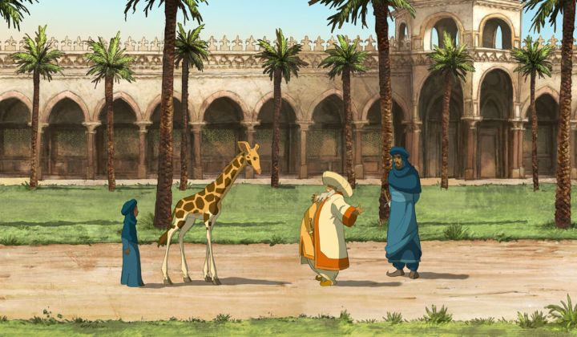

Disclaimer: Minor spoilers.I often try to discover the latest 2D animated films from around the world, especially if there is a chance that they'd be released in English for me to actually see them. Simply browsing the website of GKIDS, the American distributor single-handedly making most such films available, is a great resource, and is worth checking a few times each year for movies you might otherwise miss completely. The standard pattern is that they'd list a film when they're preparing it for a limited theatrical release, and eventually, home video. 2012's "Zarafa" was a movie at the bottom of their catalog (the only film that starts with a "Z") for a long time. I was curious to see it for a long time... but the site didn't update it for years. It was a long time before the movie was properly released on home video, and it appeared to be one of those films GKIDS struggled to sell to physical print partners, explaining the delay.But it was worth the wait. "Zarafa" is surprisingly good. I always suspected and hoped it would be good, but not this good; it's a shame it didn't get the opportunity to be seen by a larger audience. It's based on a true story too! Well... inspired by a true story, with a lot of artistic license to make it a family film. It opens with Maki, an African boy of ten years, captured and shackled among a group of slaves, on their way to be sold off by a nasty slave trader, over a century ago. The scene isn't violent or disturbing (details such as "your village was burned down too" are told through dialogue), but it's a reminder of a darker period of history that serves at the setting, and if it had to be introduced to children somehow, a story like this is a good way to do it. Maki manages to escape, finding refuge among a small herd of wild giraffes on the African plains. The slave trader has tracked them, even killing a mother giraffe who stood in his way. At that moment, the salve trader is run off by a second wandering man, saving Maki's life... but his real goal was to capture the now orphan giraffe, for the Pasha of Egpyt to use as a political gift to France for their military assistance. Maki won't have it, and insists on following the young giraffe, now named Zarafa, as they travel across the continent on foot, avoiding the eariler slave trader, and coming across colorful merchants, hot air ballons, pirates, and more. "Zarafa" isn't an exciting adventure of thrills, but a globe-trotting adventure of massive scale. One of important themes of slavery, both for humans and animals, but without being overbearing with the message. Told by an elderly narrator to the children in his African village, the story succeeds in feeling timeless, like a modern day fable. A fable perfectly suited to children, without excessive violence, and with moments of good humor. In storytelling quality, it's at least on par, and comparable, to Dreamworks' "The Prince of Egypt" and "Spirit - Stallion of the Cimeron," but with a little less Western humor, and a little more French humor (and all the better for it).The ending is limited by the truths of the real story: Zarafa is gifted to the King of France, the first giraffe the country had ever seen, but they do not send help, and choose to keep the exotic creature in their collection at the zoo. Instead, the story tries to provide a satisfying ending through where Maki ends up, succeeding with his arc, but leaving the whole of the story a little more hollow.For a small film with a limited release, I was amazed at the animation. Visual designs are well constructed, following traditional rules for facial designs, meeting the quality you'd expect for an American film of a higher budget. The movie is shot in Cinemascope, with many extra-wide shots of the deserts and mountains: there isn't much in the shots, but they are breathtaking. The animation is smooth and consistent, and I can see the pencil lines on each character: it's traditionally beautiful, and I loved it. 2D animation fans, whether they prefer older Disney or Dreamworks films, or the works of Sylvain Chomet, should be pleased. Beyond that, the English dub voice acting imperssed me, managing to give convincing portrayals of the many ethnicities involved, and I was happy with it, never needing to listen to the original French version. "Zarafa" is a ambitious movie, much more so than its smaller release would suggest. GKIDS should be proud to have brought this to American audiences. And American audiences should seek it out.
- "Ani" More reviews can be found at : https://2danicritic.github.io/ Previous review: review_Yuri_on_Ice